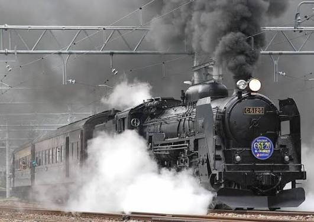
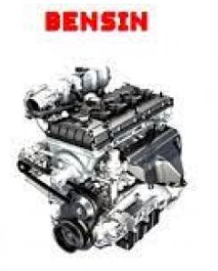
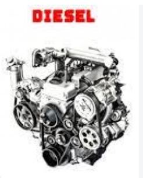
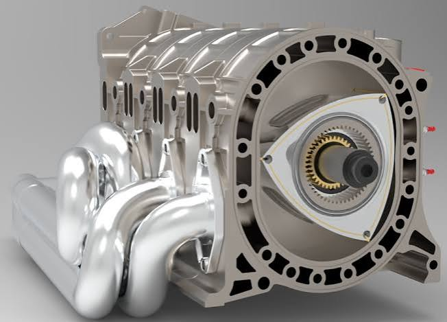

Selamat Datang
Selamat belajar materi Motor Bakar. Gunakan menu di atas secara berurutan mulai dari Pretest, Materi, Quiz, hingga Post Test.
Tujuan Pembelajaran
- Menjelaskan pengertian motor bakar.
- Mengidentifikasi jenis-jenis motor bakar.
- Menjelaskan perbedaan motor pembakaran luar dan pembakaran dalam.
- Mengidentifikasi contoh motor pembakaran luar dan pembakaran dalam.
- Menjelaskan prinsip kerja dasar mesin uap, mesin bensin, diesel, dan rotary/Wankel.
- Menghubungkan konsep motor bakar dengan penerapannya pada bidang otomotif.
Cara Menggunakan Modul
- Kerjakan Pretest melalui tombol yang tersedia.
- Pelajari materi dan gambar pada menu Materi Pelajaran.
- Tonton video pembelajaran yang tersedia.
- Kerjakan Quiz melalui Wayground.
- Kerjakan LKPD/Jobsheet sesuai arahan guru.
- Kerjakan Post Test setelah seluruh pembelajaran selesai.
Pretest
Klik tombol berikut untuk mengerjakan Pretest melalui Google Form.
Buka PretestMateri Pelajaran: Identifikasi Motor Bakar
Pengertian Motor Bakar
Motor bakar adalah mesin yang mengubah energi kimia dari bahan bakar menjadi energi panas melalui proses pembakaran, kemudian mengubahnya menjadi energi mekanik yang dapat digunakan untuk melakukan kerja.
Jenis-Jenis Motor Bakar
Berdasarkan tempat berlangsungnya proses pembakaran, motor bakar secara umum dibedakan menjadi:
Motor Bakar Pembakaran Luar
Pembakaran berlangsung di luar ruang kerja utama mesin. Panas hasil pembakaran digunakan untuk menghasilkan fluida kerja yang kemudian melakukan kerja mekanik.
Motor Bakar Pembakaran Dalam
Pembakaran berlangsung di dalam ruang bakar mesin sehingga gas hasil pembakaran langsung menghasilkan kerja pada mekanisme mesin.
Motor Bakar Pembakaran Luar
Pengertian: motor bakar pembakaran luar adalah mesin kalor yang proses pembakarannya terjadi di luar mesin atau ruang kerja utama. Energi panas dipindahkan kepada fluida kerja.
Contoh
- Mesin uap
- Ketel uap
- Turbin uap
Gambar Mesin Uap

Video Cara Kerja Mesin Uap
File gambar dan video dapat diganti dengan file baru menggunakan nama file yang sama.
Motor Bakar Pembakaran Dalam
Pengertian: motor bakar pembakaran dalam adalah mesin yang proses pembakarannya terjadi di dalam ruang bakar, sehingga energi hasil pembakaran digunakan langsung untuk menghasilkan kerja mekanik.
Contoh
- Mesin bensin
- Mesin diesel
- Mesin Wankel/rotary
Mesin Bensin

Mesin Diesel

Mesin Rotary/Wankel

Video Cara Kerja
Quiz Motor Bakar
Quiz dilaksanakan menggunakan Wayground.
Kode Quiz saat ini: 42538725
Buka Quiz WaygroundLKPD / Jobsheet
Tempatkan file LKPD/Jobsheet pada folder dokumen. Nama file yang digunakan oleh aplikasi:
LKPD-Motor-Bakar.pdf
Portal Utama
Klik tombol berikut untuk kembali ke portal utama pembelajaran.
Kembali ke Portal UtamaLink portal dapat diubah pada bagian konfigurasi.